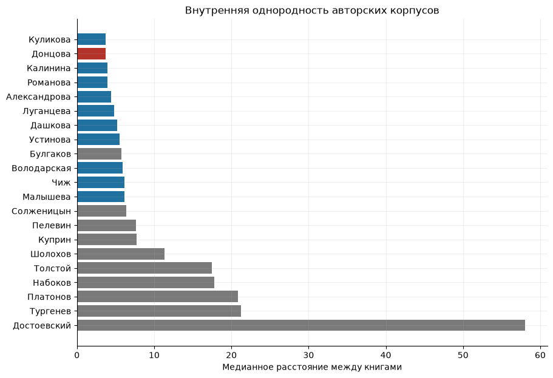
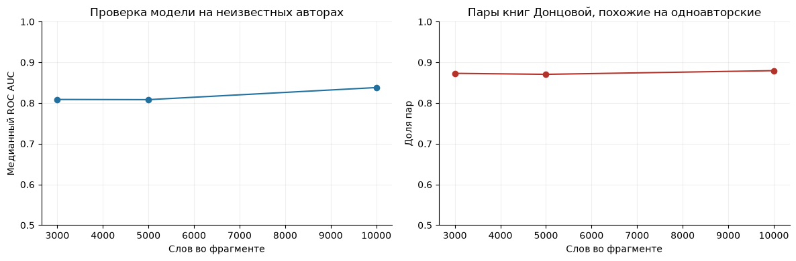
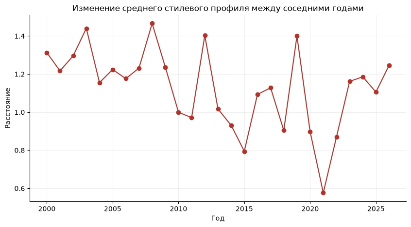
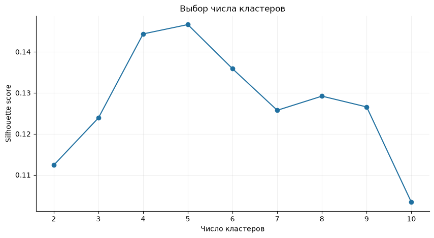
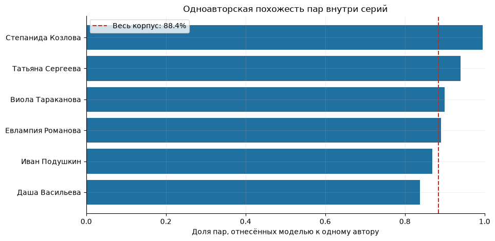

Количество произведений Донцовой уже давно перевалило за две сотни, в связи с чем у любого читателя возникает логичное предположение: «Донцова не сама пишет свои книги». Тем не менее, одно только число выпущенных книг мало что говорит об авторстве. Можно выпускать романы часто и тем не менее сохранять узнаваемый стиль. Да и обратная ситуация – романы публикуются редко – не гарантируют единообразия.
Я решил проверить эту гипотезу, опираясь на тексты, задействуя подходы стилометрии и NLP. Несколько авторов с заметно разной манерой письма должны выделиться в отдельные стилевые группы.
Конечно нужно оговориться: по опубликованному тексту нельзя быть на сто процентов уверенными в том, что за клавиатурой сидел именно этот автор или что несколько писателей работали над какой-то книгой. Всё-таки исследование измеряет в первую очередь однородность текстов корпуса, а не физическое авторство.
Кластеризации мало – алгоритм почти всегда что-нибудь найдёт и разделит. Найденные группы могут быть объяснены многими факторами, такими как разные серии книг, разные периоды, разные редакторы и так далее. Всё ограничивается лишь тем, сколько именно кластеров мы хотим найти и какие гиперпараметры выбираем. Да и непрерывное облако точек зачастую может быть разделено на подгруппы во время кластеризации. Нам нужно что-то поубедительнее.
В исследовании было использовано три набора текстов.
| Группа | Авторы | Зачем нужна |
|---|---|---|
| Исследуемый корпус | Дарья Донцова | 287 детективов, однородность которых проверяется |
| Современный контроль | Александрова, Володарская, Дашкова, Калинина, Куликова, Луганцева, Малышева, Романова, Устинова, Чиж | Основное сравнение |
| Дополнительный контроль | Булгаков, Достоевский, Куприн, Набоков, Пелевин, Платонов, Солженицын, Толстой, Тургенев, Шолохов | Проверка на авторах другого времени и литературного контекста |
В основную контрольную группу были добавлены авторы детективов и массовой прозы, близкие к Донцовой по времени и издательской среде. Также критерием отбора служила незапятнанность репутации автора: выбирались такие писатели, про которых не было слухов об использовании литературных помощников.
После очистки в десяти современных контрольных коллекциях осталось 745 книг. На одного автора приходится от 22 до 246 книг: среднее значение составляет 74,5, медиана – 52.
Среднее выше медианы прежде всего из-за коллекции Дарьи Калининой, в которой осталось 246 книг, так что о размере выборок в контрольном наборе лучше судить по медианному значению.
Разброс количества связан в первую очередь с тем, сколько книг доступно для каждого автора, а также с количеством удалённых из выборки произведений. В расчётах влияние размера коллекции ограничивается, то есть при обучении моделей число пар выравнивается по авторам. Для калибровки кластеров случайно выбираются по 22 книги из каждой коллекции, а при сравнении внутренних расстояний используются не более 10 000 пар на автора.
Таким образом, большая коллекция позволяет охватить больше книг, но не получает большего веса в модели.
Семантическое сходство текстов в этой задаче мешает. Две книги могут рассказывать об одном и том же: убийстве, наследстве и сыщике, но при этом быть написаными разными авторами. Из-за этого в данном анализе я не использовал эмбеддинги, а отталкивался от тех признаков, которые используются в классической стилометрии, и добавил несколько своих.
В результате для каждой книги были рассчитаны 24 признака:
Для определения части речи был использован
pymorphy3
. Причастия и деепричастия объединялись с глаголами, а краткие прилагательные и сравнительную степень – с прилагательными.
Для замера лексического разнообразия я использовал MATTR. Простая доля уникальных слов (TTR) уменьшается с ростом текста и плохо подходит для книг разной длины. MATTR считает долю уникальных слов в скользящем окне из n слов (в данном случае 500) и усредняет полученные признаки.
Из каждой книги я взял по три фрагмента: из начала, середины и конца. Каждый – по 5000 слов. Сначала рассчитал признаки для каждого фрагмента, а потом их усреднил.
книга -> три фрагмента -> три набора признаков -> один профиль
Так объём романа не влияет на его вес в расчёте.
Для того чтобы подтвердить, что выбранные признаки вообще умеют различать авторов, я обучил
RandomForestClassifier
. Модель сравнивает две книги по абсолютной разности между их 24 признаками. При таком представлении порядок книг в паре не влияет на результат. В train-наборе поровну одноавторских и разноавторских пар.
Во время проверки лес состоял из 300 деревьев. После проверки я обучил итоговую модель из 500 деревьев на всех десяти контрольных авторах. Именно она затем оценивала пары книг Донцовой.
Простое случайное разбиение здесь не подходит. Если бы книги каждого автора попадали в обучение и тест, чистота эксперимента была бы нарушена. Я использовал более строгую схему. Разделил десять современных авторов на пять пар, а затем провёл пять запусков. Каждый раз модель училась на восьми авторах и проверялась на двух новых. Масштаб признаков тоже рассчитывался только по обучающей части.
Balanced accuracy усредняет качество распознавания одноавторских пар и разноавторских, а ROC AUC показывает, насколько хорошо на разных порогах решения модель ставит одноавторские пары выше разноавторских.
| Запуск | Авторы в тесте | Тестовых пар | Balanced accuracy | ROC AUC |
|---|---|---|---|---|
| 1 | Александрова, Володарская | 4600 | 0.642 | 0.747 |
| 2 | Дашкова, Калинина | 4462 | 0.906 | 0.958 |
| 3 | Куликова, Луганцева | 5206 | 0.670 | 0.853 |
| 4 | Малышева, Романова | 5856 | 0.634 | 0.682 |
| 5 | Устинова, Чиж | 4818 | 0.716 | 0.845 |
Медианный результат по пяти запускам:
0.670
;
0.845
.
Разброс между запусками оказался большим. На книгах Калининой и Дашковой ROC AUC достиг
0.958
, а на книгах Малышевой и Романовой снизился до
0.682
. Это значит, что набор выбранных нами признаков переносится на незнакомых авторов, но качество полученного результата зависит от конкретных пар. Дальше я буду использовать эту модель в качестве мерила, но при этом саму оценку модели трактовать как доказательство или опровержение авторства отдельной книги я не буду.
Основная мера похожести – евклидово расстояние. Малое расстояние означает, что книги близки по выбранным признакам. Масштаб признаков рассчитывался по современным контрольным авторам без Донцовой.
Оказалось, что среднее расстояние внутри корпуса Донцовой равно
3.878
, бутстрэп-интервал – от
3.720
до
4.024
. Это второй лучший результат (где лучший == стиль автора однороден) из современных корпусов, если учитывать саму Донцову. Компактнее оказался только корпус Куликовой.

Чем короче столбец, тем меньше различаются книги автора. Синим показаны современные контрольные авторы, красным – Донцова, серым – дополнительный контроль.
Модель посчитала, что
88.4%
пар книг Донцовой – одноавторские. Медианная оценка для пар равна
0.831
. Для сравнения, для таких пар, где одна книга была взята у Донцовой, а другая у контрольного автора, медиана составила
0.211
.
Значение
88.4%
показывает, какая доля пар содержит типичные для одного автора различия, а не оценивает вероятность того, что Донцова сама написала книги.
По косинусному расстоянию Донцова занимает первое из одиннадцати место по однородности. В кластеризации использован
complete linkage
. Результат показал, что ни одно разбиение от двух до десяти кластеров не прошло минимально заданного размера в 15 книг. При
k = 2
silhouette score высокий, но при этом один из кластеров состоит всего из двух книг.
Если взять у каждого автора случайную подвыборку из 22 книг, медианный silhouette Донцовой окажется равен
0.386
. Для сравнения: медианное значение по всем авторам равна
0.507
, а если случайным пулом брать по 22 книги без учёта авторской принадлежности, то медианный silhouette будет равен
0.347
.
Также я посмотрел на корреляцию косинусного расстояния с разницей лет между произведениями.
rho = 0.450
, перестановочное
p = 0.0010
. В основном расчёте с евклидовым расстоянием корреляция оказалась равна
0.409
. Результаты двух метрик близки друг к другу, а значит, связь со временем появилась не из-за способа вычисления расстояния.
Важный этап – проверка устойчивости результатов при разной длине анализируемого фрагмента книги. Всего я перебрал три варианта и для всех вариантов использовал набор из 1102 книг длиной не менее 10 000 слов и менял только размер фрагмента.
| Слов во фрагменте | Balanced accuracy | ROC AUC | Одноавторские пары Донцовой | Место по однородности | Silhouette Донцовой | Медиана одиночных авторов |
|---|---|---|---|---|---|---|
| 3000 | 0.676 | 0.809 | 87.3% | 1 из 11 | 0.192 | 0.363 |
| 5000 | 0.688 | 0.808 | 87.1% | 2 из 11 | 0.207 | 0.375 |
| 10 000 | 0.714 | 0.838 | 88.0% | 1 из 11 | 0.265 | 0.404 |

Увеличение размера фрагмента чуть улучшает распознавание авторов, но практически не меняет долю пар Донцовой, похожих на одноавторские.
Также эта проверка показала, что при любом размере фрагмента Донцова занимает первое или второе место, а доля одноавторских пар остаётся в промежутке от
87.1%
до
88.0%
.
Вместе с разницей в годах между книгами Донцовой растёт и расстояние между стилевыми профилями. Корреляция Спирмена равна
0.409
, перестановочное
p = 0.0010
.

На графике выше показано изменение в евклидовом расстоянии между книгами соседних годов. Видно, что есть отдельные скачки, но при этом также нужно учитывать:
rho = 0.409
считался не только по соседним годам, а по всем комбинациям пар книг.
Так каждая книга входит во множество пар: сами пары нельзя считать независимыми наблюдениями. Для этого проверяем значимость связи перестановочным тестом. Случайно назначаем годы книгам и заново рассчитываем корреляцию. Этот тест и дал
p = 0.0010
.
Таким образом, в библиографии Донцовой наблюдается дрейф стиля, связанный со временем, хотя отдельные выбросы и присутствуют. Тем не менее, романы 1999 и 2025 годов в среднем различаются сильнее, чем две книги, выпущенные одна за другой.
Я использовал агломеративную кластеризацию методом Уорда. Пробовал разное количество групп: от двух до десяти. В каждой должно было быть минимум 15 книг; таким образом, мы защищаемся от предположения, что разбиение держится на нескольких случайных выбросах.
minimum_cluster_size = max(
10,
int(np.ceil(0.05 * len(target))),
)
for k in range(2, 11):
labels = AgglomerativeClustering(
n_clusters=k,
linkage="ward",
).fit_predict(X_cluster)
score = silhouette_score(
X_cluster,
labels,
)
eligible = (
np.bincount(labels).min()
>= minimum_cluster_size
)
Лучший из вариантов делит корпус на кластеры из 97, 84, 75 и 31 книги. Самый маленький кластер более чем вдвое больше заданного порога в 15 книг.
Silhouette score для этих четырёх кластеров равен
0.144
. При повторной кластеризации случайных 80% книг медианный ARI оказался равен
0.602
, а диапазон между 2,5-м и 97,5-м процентилями – от
0.416
до
0.850
.

Если смотреть на график, то формально максимум находится на пяти кластерах, но при таком разбиении один из них содержит только шесть книг.
ARI показывает, насколько похоже по группам распределяются книги при повторных запусках на подвыборках. В данном случае устойчивость умеренная, но silhouette низкий (
0.144
): границы между группами размыты.
Для проверки масштаба я делил выборки по 22 книги на две группы и считал silhouette. Медианы оказались следующими:
0.205
;
0.385
;
0.257
.
Разделение у Донцовой слабее, чем у выборок отдельных авторов и смешанного контроля, то есть её корпус книг даже более однороден.
После ручной очистки я распределил 287 детективов по шести сериям.
| Серия | Книг | Годы | Пары, похожие на одноавторские | Медианная оценка |
|---|---|---|---|---|
| Степанида Козлова | 20 | 2009–2025 | 99.5% | 0.955 |
| Татьяна Сергеева | 39 | 2004–2026 | 93.9% | 0.906 |
| Виола Тараканова | 54 | 1999–2025 | 89.9% | 0.831 |
| Евлампия Романова | 62 | 1999–2025 | 89.1% | 0.844 |
| Иван Подушкин | 39 | 2001–2026 | 86.9% | 0.817 |
| Даша Васильева | 73 | 1999–2025 | 83.7% | 0.774 |

Красная линия означает результат всего корпуса, 88,4%. Ни одна из серий не выглядит как отдельный, отличающийся от остальных корпус.
По полученным результатам в каждой из серий большинство пар книг были определены как одноавторские. Минимальный результат у серии «Даша Васильева»:
83.7%
.
Кластеры 0, 1, 2, 3 в таблице ниже – это те самые кластеры из параграфа «Четыре кластера, которые не означают четырёх авторов». Их номера не означают ранг, хронологический период или предполагаемого автора, а всего-навсего условность. Таблица показывает, сколько книг каждой серии попало в каждый из кластеров.
| Серия | Кластер 0 | Кластер 1 | Кластер 2 | Кластер 3 |
|---|---|---|---|---|
| Виола Тараканова | 16 | 15 | 18 | 5 |
| Даша Васильева | 26 | 18 | 21 | 8 |
| Евлампия Романова | 17 | 16 | 24 | 5 |
| Иван Подушкин | 8 | 13 | 10 | 8 |
| Степанида Козлова | 10 | 8 | 0 | 2 |
| Татьяна Сергеева | 20 | 14 | 2 | 3 |
Можно заметить, что ни одна серия не совпадает с кластером. Пять серий представлены во всех четырёх группах, за исключением «Степаниды Козловой» в кластере 2. Каждый кластер также содержит книги нескольких серий.
Серии книг выходили в разные годы; из-за этого таблица выше смешивает влияние серии книг и времени. Для всех пар я построил регрессию:
расстояние = константа + разница лет + общая серия
# Получаем индексы всех уникальных пар книг.
# k=1 исключает сочетания без повторений.
pair_left, pair_right = np.triu_indices(
len(series_time),
k=1,
)
# Для каждой пары рассчитываем евклидово расстояние
# между стилометрическими профилями книг.
distances_series = np.linalg.norm(
X_series[pair_left] - X_series[pair_right],
axis=1,
)
# Для каждой пары рассчитываем абсолютную разницу
# между годами выхода книг.
year_gaps_series = np.abs(
years_series[pair_left]
- years_series[pair_right]
)
# Проверяем, принадлежат ли две книги одной серии.
# Результат сравнения True/False преобразуется в числа, где 1.0 – одна серия, а 0.0 – разные.
same_series = (
series_values[pair_left]
== series_values[pair_right]
).astype(float)
После учёта влияния времени выхода книги одной серии не оказались статистически ближе, чем книги разных серий (
+0.051
).
Затем я сравнил книги внутри трёх временных промежутков.
| Период | Книг | Серий | Внутри серии | Между сериями | Разница |
|---|---|---|---|---|---|
| 1999–2007 | 79 | 5 | 3.904 | 3.856 | -0.047 |
| 2008–2016 | 101 | 6 | 3.514 | 3.533 | +0.019 |
| 2017–2026 | 107 | 6 | 3.022 | 3.030 | +0.009 |
Как можно видеть, расстояния внутри серии и между сериями практически совпадают, а знак разницы меняется от периода к периоду.
Проведённый мной анализ не устанавливает, как я писал в начале, физическое авторство. Я не искал договоров с наёмными писателями, черновиков и истории правок. Он показал, что корпус книг Донцовой является одним из самых компактных среди всех рассмотренных, а различия между её книгами согласуются с гипотезой о постепенном временном дрейфе стиля. Данный анализ не подтвердил простую гипотезу о том, что в книгах Дарьи Донцовой присутствуют несколько явно выраженных стилевых групп, соответствующих разным авторам; даже наоборот – сделал шаг к опровержению этой теории.
Будущие проверки и исследования должны отделить авторский стиль от редакторского, то есть попробовать повторить расчёт без пунктуации, добавить частоты конкретных служебных слов (сейчас встречаемость считается по частям речи, но, возможно, продуктивным будет смотреть на «любимые» предлоги автора, союзы и так далее), символьные n-граммы.
Код, на который я опирался в этой статье, находится в ноутбуке